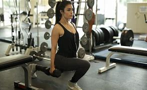
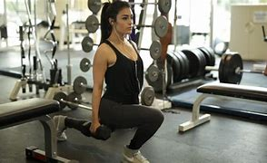

IronGym en accion...
Las rutinas Gratis por parte de IronGym se iran ACTUALIZANDO cada semana.
El proposito de esto es proporcionar rutinas gratis a nuestros internautas y clientes IronGym, promoviendo de esta manera la actividad fisica y mejora de la salud.
Esta semana se incluyeron 3 rutinas diferentes de acuerdo al nivel que seas, ya sea principiante, intermedio y avanzado.
Pero las tres del mismo grupo muscular, en este caso (Tren inferior).

Recalcar que estas rutinas son en casa... Para que tu rutina IronGym se de lo mas efectiva posible se recomienda calentar con estiramientos articulares durante 10 min y algun ejercicio cardiovascular breve (5 min) para elever la temperatura corporal, ya una vez hecho lo anterior se recomienda que de ser un nivel principiante utilices solo tu peso corporal, y si eres intermedio o avanzado añadir peso a tus ejercicios ya que de esta manera causaras mas estres y reclutamiento de fibras muusculares, lo cual ocasionara Tener unas piernas fuertes, definidas y sin celulitis. A continuacion las rutinas, elige de acuerdo a tu nivel.

Recalcar que estas rutinas son en casa... Para que tu rutina IronGym se de lo mas efectiva posible se recomienda calentar con estiramientos articulares durante 10 min y algun ejercicio cardiovascular breve (5 min) para elever la temperatura corporal, ya una vez hecho lo anterior se recomienda que de ser un nivel principiante utilices solo tu peso corporal, y si eres intermedio o avanzado añadir peso a tus ejercicios ya que de esta manera causaras mas estres y reclutamiento de fibras muusculares, lo cual ocasionara Tener unas piernas fuertes, definidas y sin celulitis. A continuacion las rutinas, elige de acuerdo a tu nivel.
Nivel: Principiante
Preagotamiento: 15 saltos
Series:
|Ejercicio 1:Sentadillas pies y puntas abiertas con bombeo 4x12 reps
|Ejercicio 2:Desplante estatico hacía atras 3x12 reps
|Ejercicio 3:Sentadillas con pies a la altura de los hombros 3x15 reps
|Ejercicio 4:Puente en el piso con un pie 3x12 reps
|Ejercicio 5:Desplante estático hacía adelante alternando piernas 4x12 reps
Series:
|Ejercicio 1:Sentadillas pies y puntas abiertas con bombeo 4x12 reps
|Ejercicio 2:Desplante estatico hacía atras 3x12 reps
|Ejercicio 3:Sentadillas con pies a la altura de los hombros 3x15 reps
|Ejercicio 4:Puente en el piso con un pie 3x12 reps
|Ejercicio 5:Desplante estático hacía adelante alternando piernas 4x12 reps
Nivel: Intermedio
Preagotamiento: 25 saltos
Series:
|Ejercicio 1:Puente acostada, con pies abiertos 4x12 y en la última rep sostener 10s
|Ejercicio 2:Desplante bulgaro 4x15 cada pierna
|Ejercicio 3:Sentadilla tipo zumo 4x12 y en la última rep sostener 10s
|Ejercicio 4:Hip-trust con liga arribita de la rodilla 4x15 y en la última rep sostener 10s
|Ejercicio 5:Peso muerto con pies abiertos 4x12 aprentando bien los gluteos al final de cada rep
|Ejercicio 6:Saltos de rana 4x15 y en la ultima rep sostener 10s
Series:
|Ejercicio 1:Puente acostada, con pies abiertos 4x12 y en la última rep sostener 10s
|Ejercicio 2:Desplante bulgaro 4x15 cada pierna
|Ejercicio 3:Sentadilla tipo zumo 4x12 y en la última rep sostener 10s
|Ejercicio 4:Hip-trust con liga arribita de la rodilla 4x15 y en la última rep sostener 10s
|Ejercicio 5:Peso muerto con pies abiertos 4x12 aprentando bien los gluteos al final de cada rep
|Ejercicio 6:Saltos de rana 4x15 y en la ultima rep sostener 10s
Nivel: Avanzado
Preagotamiento: desplantes 5 por cada pierna estáticos hasta que hagas 50.
Series:
|Ejercicio 1:5x12 sentadillas abiertas con puntas abiertas, controlar el movimiento.
|Ejercicio 2:5x12 sentadillas a la altura de los hombros pies neutros, controlar el movimiento.
|Ejercicio 3:4x12 sentadillas cerradas con puntas abiertas, controlar el movimiento, y en la quinta serie tratar de llegar al fallo, hacer las más que puedas, si te cansas agarras aire 10 segundos y otra vez hasta que te canses, haci unas 5 veces se considera un aproximado al fallo.
|Ejercicio 4:4x15 Desplantes fijos cada pierna.
|Ejercicio 5:4x25 pantorilla levantando puntas y bajando lentooo.
Series:
|Ejercicio 1:5x12 sentadillas abiertas con puntas abiertas, controlar el movimiento.
|Ejercicio 2:5x12 sentadillas a la altura de los hombros pies neutros, controlar el movimiento.
|Ejercicio 3:4x12 sentadillas cerradas con puntas abiertas, controlar el movimiento, y en la quinta serie tratar de llegar al fallo, hacer las más que puedas, si te cansas agarras aire 10 segundos y otra vez hasta que te canses, haci unas 5 veces se considera un aproximado al fallo.
|Ejercicio 4:4x15 Desplantes fijos cada pierna.
|Ejercicio 5:4x25 pantorilla levantando puntas y bajando lentooo.